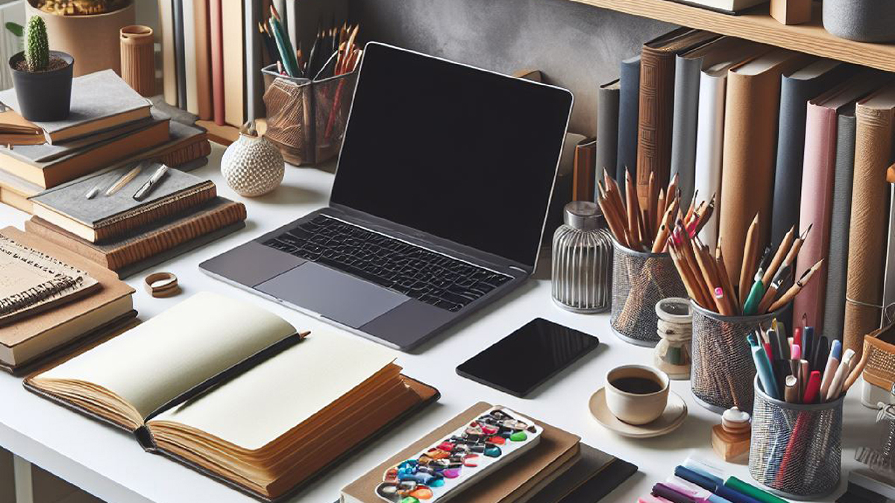
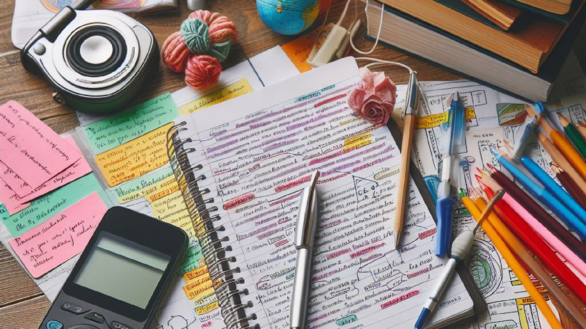

Dicas para Aprender sem Estresse!
Estudar não precisa ser um labirinto sem fim! Muitas vezes, a chave para aprender está na abordagem certa. Aqui estão algumas dicas para tornar o seu estudo mais eficiente, rápido e até divertido. 📚
Organize-se
- Estabeleça um plano de estudos.
- Divida o material em partes gerenciáveis.
- Crie metas realistas para tornar o processo menos assustador.

Aprenda Ativamente
- Faça resumos, mapas mentais, use flashcards.
- Interaja com o material para ajudar na retenção de informações.

Varie os Métodos
- Assista a vídeos, ouça podcasts, faça exercícios práticos.
- A diversidade ajuda na compreensão e mantém o cérebro engajado.
Intervalos são Cruciais
- Faça pausas regulares para descansar a mente.
- Utilize técnicas como o Pomodoro para dividir o tempo em intervalos de estudo e descanso.
Lembre-se, a chave para um estudo eficaz não é apenas a quantidade, mas a qualidade do tempo investido. Encontrar métodos que funcionem para você é fundamental para tornar o processo de aprendizagem mais fluido e até mesmo prazeroso.